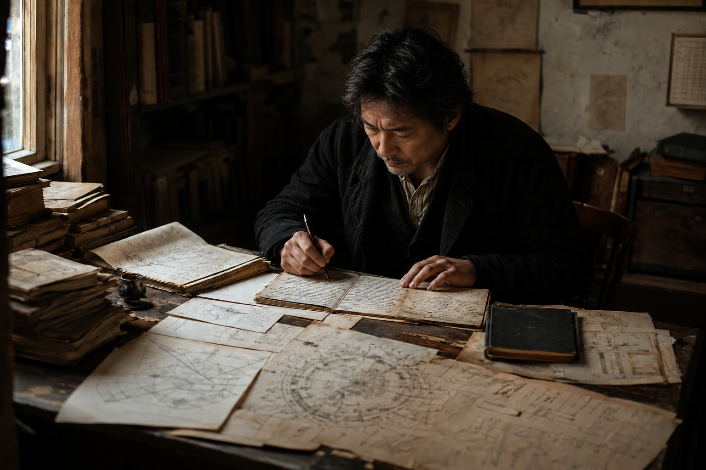

The Seeker
The deeper I go into consciousness, the more I realize how infinite this path really is.
Every new practice, experience, and understanding reveals something else.
The Seeker is where we lean into that mystery. You can explore one piece that calls to you or keep following the path deeper. You decide where this path takes you. And how deep you want to go.
Something inside you remembers.
Maybe you’ve caught a glimpse of something beyond your ordinary way of experiencing life—something that showed you there was more.
A deep meditation. A plant medicine catalyst. A connection in nature.
“Or simply one of those profound moments when, for a little while, you felt connected to the infinite, to something ineffable, and to a sense that you were never separate from the universe at all.”And once you’ve touched that deeper place, something inside you remembers it — and wants to return.
There is always
another layer.
Enlightenment isn’t somewhere you arrive. It’s a state of being that can keep opening deeper and deeper. I think of it as an infinite dial.
With every turn, the noise of the mind can fall further away. The boundaries of the self begin to dissolve. You feel more of the connection running through everything. And eventually, there are moments when there is no separation at all — only consciousness, love, and the direct experience of being part of the whole.
What may begin as a rare or extraordinary state can become more familiar over time. The more often you return to these deeper states, the more familiar they become, and the more they begin to feel like your normal state of being.

Gnosis
There is a huge difference between believing something and knowing it for yourself.
You can read about nonduality. Study awakening. Believe in God or Source. Listen to someone describe what oneness feels like.
But gnosis is different. Gnosis is knowing through your own direct experience.
For thousands of years, seekers have gone inward to discover these truths for themselves.
And until you experience something directly, part of it is still someone else’s story.
Some questions are too important to leave as someone else’s answer.
Human beings have been asking them for thousands of years—searching, contemplating, and going inward to understand what lies beneath the surface of ordinary life.
What is consciousness?
Who am I beneath the mind?
What happens when we die?
Explore More Of These Mysterious Questions
These questions can take a lifetime to explore. Some answers may never fit completely into words. But that doesn’t mean they can’t be known.
Eventually, the searching becomes stillness.
You can spend your whole life searching for the next teaching, experience, or answer.
But at some point, the path begins turning inward. You become still. You listen. You give yourself enough space to notice what is underneath the constant movement of the mind.
And the deeper you tune in, the more you begin realizing that so many of the answers you were searching for were already within you. The work becomes learning how to access what was there all along.
Sit With This
There are no correct answers. Write what genuinely feels true.
- 01
What has been the most profound or mystical experience of my life?
- 02
What mystery do I feel most called to understand—and why does it keep pulling me back?
- 03
What feels true because I’ve lived it—and what have I not yet experienced directly for myself?
- 04
If I listened closely to my intuition, where would it pull me to explore next?
These questions are private. Nothing here is entered into the website or shared with anyone else.
Every answer opens another mystery.
The beautiful thing about going deeper is realizing how infinite this really is. Every realization seems to reveal another layer. And every time you think you understand the path, something else begins to unfold.
There is nowhere you need to arrive. Explore with joy and curiosity. Go as deep as you feel called. And whatever you discover there, bring some of that love, connection, and understanding back with you.
I think that’s exactly what the Seeker is here to explore.
Every path can contain a piece.
You don’t need to explore everything.
Notice what keeps drawing your attention. Explore it. Pay attention to what it reveals, and let your own experience show you where to go next.
The Tree below maps the different doorways you can explore and shows how they connect within the larger Seek Consciousness Blueprint.
See how it all connects
When you're ready to understand how the different teachings, practices, and areas of exploration fit together, the Seek Consciousness Blueprint offers a map of the larger journey.
You can watch the complete 30-minute introduction from beginning to end. Or you can explore the Tree one piece at a time.
There is no wrong way to go. Simply explore what you feel called to.
Tap any icon below to watch its teaching
Explore in any order and return whenever something new stands out.